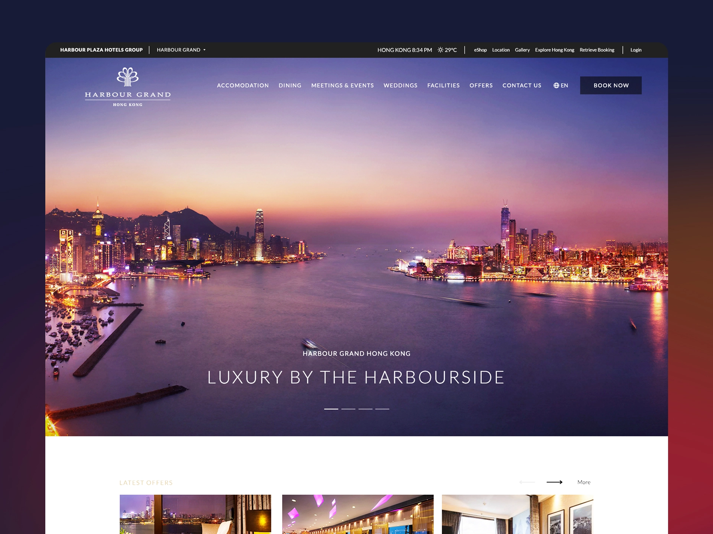
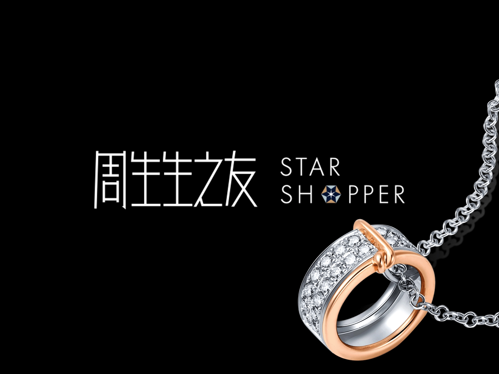
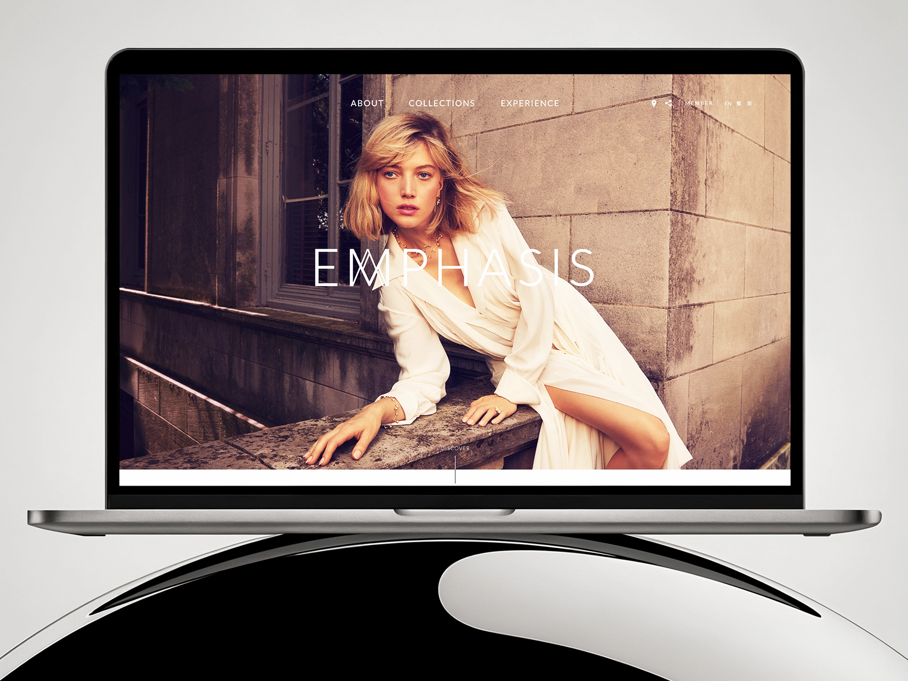

Hello! I am Vincent.
Backend Architect &
Systems Developer
Engineering robust logic and scalable foundations for
complex digital ecosystems.
Building the invisible
power that drives
seamless experiences.
I specialize in the "under the hood" of digital products — where logic meets performance. With a focus on backend architecture, system integration, and database optimization, I transform complex business requirements into stable, high-performance technical solutions.
I believe that the best systems are the ones you never have to think about because they just work. Efficiently. Securely. Scalably.
System Architecture
API Development
Database Management
Performance Optimization
System Architecture
API Development
Database Management
Performance Optimization
15+ years of experience
Awards winner with 10,000+ coffees
TypeScript
Node.js
Python
Java
FastAPI
SQL









Ready to build
something solid?
Let's talk.
Copyright © 2026 VCII. All rights reserved.